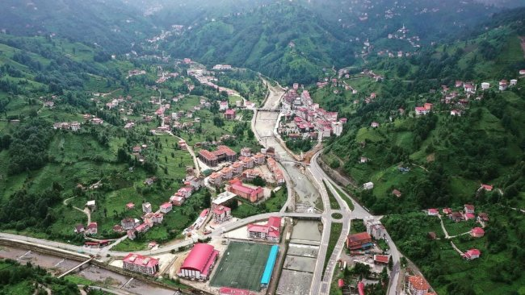

Potamya Osmanlı yazılı kaynaklarında ilk olarak 1486 tarihli Trabzon tapu tahrir defterlerinde görünen, Trabzon İmparatorluğu döneminde kurulmuş önemsiz bir Rum köyü olduğu düşünülmektedir.1530 tarihli defterlerde 3 mahalle ve 2 köyde oluşan Potamya karyesinde 228 Hristiyan Rum, 28 yeni Müslüman (olmuş Rum), 26 Baştine yaşamakta ve 13 değirmen olduğu kayıtlıydı.1924 yılında yerleşimdeki medreseler kapatılınca tepkiyle karşılanmış, 1925 yılında "Şapka İsyanı" olarak bilinen tarihi olay Potamya'da yaşanmıştır. Güneysu, Rize merkez ilçesine bağlı bir bucak merkezi iken 1987 yılında ilçe olmuştur. Güneysu İlçesi’nin eski adı ve halk arasında da yaygın olarak kullanılan ismi Potomya'dır. Çünkü Karadeniz Bölgesi'nde kaynağını dağların kuzeyinden alan birçok kısa mesafeli, gür akışlı akarsulardan olan Taşlıdere Havzası'nın iki önemli kolu olan Salarha Deresi ve Potomya Deresi arasında kaldığından bu ismi almıştır. Yani iki akarsu ortasında yer aldığından Potamya denilmiş ve zamanla halk dilinde Potomya'ya dönüşmüştür. Potamya eski Yunancada "dereli" anlamına gelmektedir.
Güneysu İlçe sınırları yaklaşık olarak batıda 40 34 doğu boylamından, doğuda 40 44 doğu boylamından, güneyde 40 50 kuzey enleminden ve kuzeyde 41 02 kuzey enleminden geçmektedir. Güneysu, Rize il merkezinin güneydoğusunda Taşlıdere'nin Karadeniz'le birleştiği noktadan güneye doğru gidildikçe dokuzuncu kilometrede yer alan ve 107 km² alana sahip Rize'nin iç kesim ilçelerinden biridir. Şehir merkezinin, kıyıya uzaklığı 14 km olup şehir merkezi rakımı 152 metredir. Doğudan Çayeli, kuzeyden Rize merkeze bağlı topraklar batıdan Rize merkeze ve İkizdere toprakları ve güneyden İkizdere toprakları ve Kaçkar Dağları ile çevrilidir. Kuzey sınırları Karadeniz kıyısından 9 km içeriden başlayıp şehir merkezinin 14.km'de olduğu halde rakımı 152 km'de olması akarsu kenarında kurulmasının bir sonucudur. Oysa şehir merkezi bile tepelerle çevrili olup, buralarda kurulan yakın köylerde bile rakım bu değerin birkaç katına çıkabilmektedir.
İlçe çok engebeli bir rölyefe sahip olup, ilçe sınırları dahilinde yükseltisi 150 m ile 2000 m civarında değişen tepelik alanlar mevcuttur. Bu tepeler yapı, rölyef ve teşekkülat bakımından bir birine benzer özellikler göstermekte olup vadilerle birbirinden ayrılmışlardır. Bu vadilerde büyüklü küçüklü çok sayıda akarsu mevcut olup bunlar daha sonra Taşlı dere havzasının en önemli kolu olan Güneysu deresini meydana getirmektedir. Arazinin çoğu dağlık olup cüzi bir kısmını yaylalar meydana getirmektedir. Denize komşu olmadığı için de Rize genelinde payı %1 olan ovalarından bile tam olarak payını alamamıştır. Bu dağlık arazi ise tamamen bitki örtüsü ile kaplı olup, açık alan görmek mümkün değildir. Bu bitki örtüsü vadilerin derin ve keskin görünümünü yumuşatıp göze hoş bir karakter kazanmasına yardımcı olmaktadır.
Bölgenin iklim özelliğinden kaynaklanan sürekli yağışlar aşınmayı arttırarak erozyon tehlikesini sürekli gündemde tutmaktadır. Ayrıca bu yağışlar rölyefteki engebe ve toprakta ki namüsait yapı ve doku ile birleşince ilçenin her köşesine can ve mal kaybına müsebbip olan sürpriz sel ve heyelanlarla karşılaşmak mümkün olmaktadır. Nitekim 12 Kasım 2001 ve 23 Temmuz 2002 felaketleri bunun sadece acı iki örneğidir.